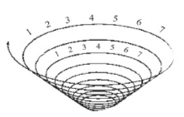
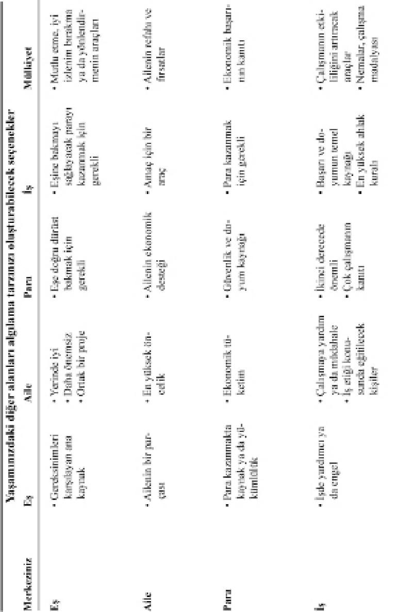
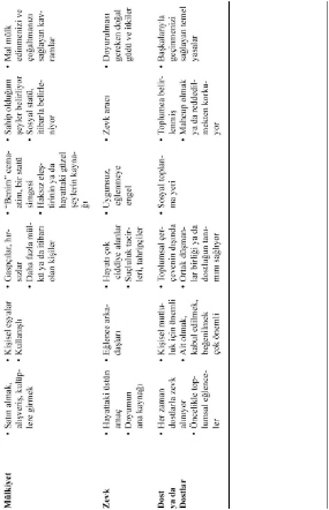
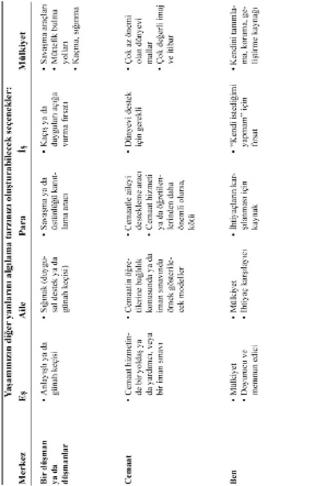
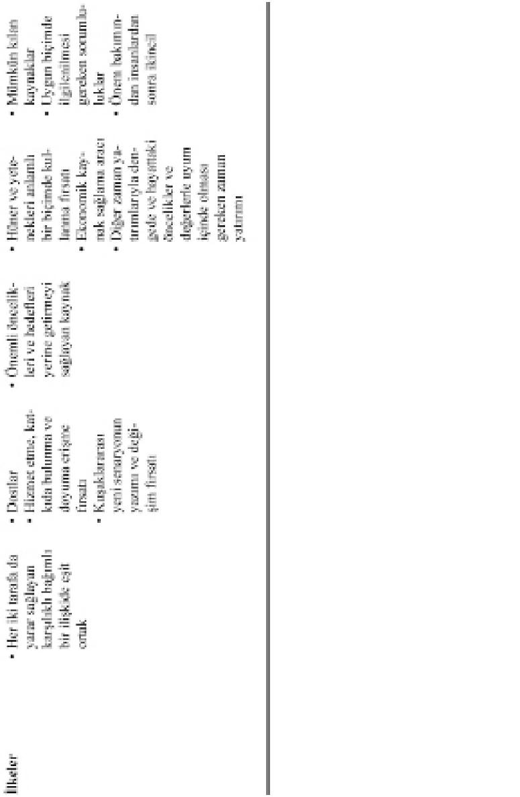
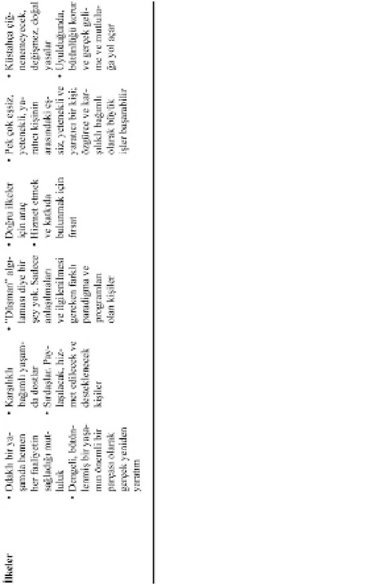

6. Alışkanlıklar).
Bağımsızlığa yol açan alışkanlıklardan (1., 2. ve 3.
Alışkanlıklar) herhangi birinde ne kadar ilerleme kaydederseniz, karşılıklı bağımlı durumlarda o kadar etkili olursunuz (4., 5. ve 6. Alışkanlıklar). Yenilenme (7. Alışkanlık) ise, bütün alışkanlıkları yenileme sürecidir.
Fiziksel boyutunuzu yenilerken, kişisel vizyonunuzu (1. Alışkanlık),
özbilinç
ve
özgür
iradenizin,
proaktivitenin, edilgin olmak yerine etkin olma, herhangi bir dürtüye karşı kendi tepkinizi seçme özgürlüğünüzün paradigmasını güçlendirirsiniz. Belki de bu, fiziksel egzersizin en önemli yararıdır. Günlük Özel Zaferlerden her biri, içinizdeki kişisel güvenlik hesabına yapılan bir yatırımdır.
Ruhsal boyutunuzu yenilerken, kişisel liderliğinizi güçlendirirsiniz (2. Alışkanlık). Sadece bel eğinize değil, hayal gücünüz ve vicdanınıza da uyma yeteneğini artırırsınız. Benliğinizin en derinlerindeki paradigma ve değerleri iyice anlar, içinizde doğru ilkelerden oluşan bir merkez yaratır, hayattaki kendinize özgü misyonunuzu belirlersiniz. Doğru ilkelerle uyum içinde yaşamak ve kendi güç kaynağınızdan yararlanmak için yeni bir senaryo yazarsınız. Ruhsal yenilenme sırasında yarattığınız zengin özel yaşam, kişisel güvenlik hesabınıza olağanüstü yatırımlar yapar.
Zihinsel boyutunuzu yenilerken, kişisel yönetiminizi pekiştirirsiniz (3. Alışkanlık). Plan yaparken, zihninizi güçlendirici I . Kare etkinliklerini, öncelikli hedefleri ve zamanınızla enerjinizin kul anımını azamiye çıkaracak faaliyetleri kabul enmeye zorlayıp, etkinliklerinizi önceliklerinizin etrafında örgütleyerek uygulamaya geçersiniz. Eğitiminizi sürdürmekle ilgilenirken, bilgi temelinizi
genişletip
seçeneklerinizi
artırırsınız.
Ekonomik güvenliğinizin kaynağı işinizde değil; üretme
gücünüzdedir.
Düşünmek,
öğrenmek,
yaratmak ve uyum sağlamaktadır. Gerçek mali bağımsızlık budur; servete değil, servet yaratma gücüne sahip olmaktır. O güç, insanın içindedir.
Günlük Özel Zafer –her gün fiziksel, ruhsal ve zihinsel boyutların yenilenmesine en az bir saat ayırmak– Yedi Alışkanlığın geliştirilmesinde anahtar işlevi görür ve tümüyle Etki Alanınızın içindedir. Bu, alışkanlıkları yaşamınızla bütünleştirmek, ilke merkezli olmak için gereken, I . Kare’ye odaklanma süresidir.
Ayrıca Günlük Genel Zafer’in de temelini oluşturur.
Sosyal/duygusal boyutta baltayı bilemeniz için gereken güvenlik duygunuzun kaynağınızdır. Karşılıklı bağımlı durumlarda Etki Alanınıza odaklanmanız için size kişisel güç verir. Böylece başkalarına Bol uk Zihniyeti
paradigmasından
bakar,
farklılıklarına
gerçekten değer verir ve başarılarından mutlu olursunuz. Bu size, tam bir anlayış ve sinerjik Kazan/Kazan çözümleri için çalışmanız, karşılıklı bağımlı bir gerçeklikte 4., 5. ve 6. Alışkanlıkları uygulamanız için gereken temeli sağlar.
Yenilenme; büyüme ve değişme, sürekli gelişme yönünde yükselen bir sarmalda ilerlememiz için bize güç veren ilke ve süreçtir.
O sarmalda anlamlı ve tutarlı bir ilerleme kaydetmek için, bu yükselme hareketini yönlendiren benzersiz insani yetiyle ilgili olarak, yenilenmenin başka bir yanını, vicdanımızı da incelememiz gerekir.
Madame de Staël’in dediği gibi: “Vicdanın sesi o kadar narindir ki, bastırılması çok kolaydır. Ama aynı zamanda öyle berraktır ki, onu başka bir şeyle karıştırmak imkânsızdır.”
Vicdan, doğru ilkelere uyup uymadığımızı sezen ve bizi onların düzeyine yükselten doğal yetidir; tabii, bozulmamışsa, formundaysa.
Mükemmel bir sporcu için sinir ve kasların, bir bilgin için zihnin eğitilmesi ne kadar önemliyse, gerçekten proaktif, etkili bir kişi için de vicdanın eğitilmesi o kadar yaşamsal önem taşır. Ne var ki vicdanın eğitilip terbiye edilmesi, daha da fazla yoğunlaşmayı, daha dengeli bir disiplini ve dürüst yaşamın daha tutarlı bir biçimde sürdürülmesini gerektirir. Esinlendirici edebiyat yapıtlarıyla düzenli olarak beslenmeyi, soylu düşünceler geliştirmeyi ve hepsinden de önemlisi, vicdanın hafif sesine kulak vererek yaşamayı gerektirir.
Antrenman yapmamak ve abur cubur şeyler yemek bir sporcunun kondisyonunu nasıl mahvederse, müstehcen, kaba ya da pornografik şeyler de, daha yüksek duyarlılıklarımızı uyuşturan içsel bir çöküntüye yol açar. “Yanlış nedir, doğru nedir?” diye soran doğal ya da ilahi vicdanın yerine, “Acaba içyüzüm ortaya çıkacak mı?” diye düşünen sosyal vicdanı geçirir.
BM’nin eski genel sekreteri Dag Hammarskjold’un deyişiyle:
Tümüyle hayvanlaşmadan, içinizdeki hayvanla oynayamazsınız. Doğruyu bulma hakkınızdan vazgeçmeden, yalanlarla oynayamazsınız. Zihinsel duyarlılığınızı
kaybetmeden,
zalimlikle
oynayamazsınız. Bahçesinin düzenli olmasını isteyen kişi, yaban otlarına bir alan ayırmaz.
Özbilinç sahibi olur olmaz, yaşamımıza yön verecek hedefleri ve ilkeleri seçmemiz gerekir. Aksi halde boşluk doldurulur ve özbilincimizi yitirerek sadece hayatta kalıp üremek için yaşayan hayvanlara benzeriz. Varlıklarını bu düzeyde sürdüren kişiler yaşamıyor,
“yaşatılıyor”dur.
İçlerinde
uyuklayan,
geliştirilmemiş benzersiz yetilerin farkında bile olmadan, tepki veriyorlardır.
Bu yetileri geliştirmenin kestirme bir yolu da yoktur.
Hasat yasası geçerlidir: “Ne ekersen, onu biçersin.”
Ne daha fazlasını, ne daha azını. Adaletin yasası değişmez. Doğru ilkelere ne kadar uyum sağlarsak, dünyanın nasıl işlediği konusundaki yargılarımız o kadar
iyileşir
ve
paradigmalarımız
–arazi
haritalarımız– da o kadar doğru olur.
Ben, bu yükselen sarmalda büyüyüp gelişirken, vicdanımızı eğiterek ve ona itaat ederek yenilenme sürecinde çaba göstermemiz gerektiğine inanıyorum.
Gitgide daha iyi eğitilen bir vicdan, kişisel özgürlük, güvenlik, bilgelik ve güç yolunda ilerlememizi sağlayacaktır.
Yükselen sarmalda ilerlemek, gitgide daha yüksek d üzl e m l e r d e öğrenmemizi,
bağlanmamızı
ve
yapmamızı gerektirir. Bunlardan sadece birinin yeterli olduğunu düşünürsek, kendimizi aldatmış oluruz.
İlerlemeyi sürdürmek için öğrenmemiz, bağlanmamız ve yapmamız gerekir. Öğren, bağlan ve yap; yine öğren, bağlan ve yap.
UYGULAMA ÖNERİLERİ
YÜKSELEN SARMAL
1. Fiziksel açıdan formda kalmanıza yardım edecek, yaşam tarzınıza uyacak ve size zevk verecek etkinliklerin bir listesini yapın.
2. Bu etkinliklerden birini seçin ve önünüzdeki hafta kişisel rol alanınızdaki bir hedef olarak belirleyin. Hafta sonunda performansınızı değerlendirin. Hedefinize ulaşamadıysanız, bunun nedeni onu gerçekten daha yüksek bir değer uğruna ikinci plana almanız mıydı?
Yoksa
değerlerinize
bağlı
kalarak
davranmayı
başaramadınız mı?
3. Ruhsal ve zihinsel boyutlarınız için de benzer bir yenilenme listesi yapın. Sosyal/Duygusal alanınızda iyileştirmek istediğiniz ilişkilerin listesini yapın, ya da Genel Zafer’in etkililiğinizi artıracağı belirli koşulları sıralayın. Her alanda bir maddeyi haftanın hedefi olarak belirleyin. Uygulamaya geçin ve değerlendirin.
4. Her hafta dört boyutta “baltayı bileyecek” belirli çalışmaları
yazmaya,
onları
yapmaya
ve
performansınızla
elde
ettiğiniz
sonuçları
değerlendirmeye bağlı kalın.
YİNE İÇTEN DIŞA
Hazreti İsa içten dışa doğru çalışır. Dünya dıştan içe doğru çalışır. Dünya insanları viranelerden çıkaracaktır. Hz. İsa viraneleri insanların içinden çıkarır, sonra onlar kendilerini viranelerden çıkarır. Dünya çevrelerini değiştirerek insanları şekillendirecektir. Hz. İsa insanları değiştirir, sonra onlar çevrelerini değiştirir. Dünya insan davranışlarına biçim verecektir, ama Hz. İsa insan doğasını değiştirebilir.
EZRA TAFT BENSON
Bu kitabın özüne ilişkin olduğunu düşündüğüm kişisel bir öykümü paylaşmak istiyorum sizinle. Okurken, içinde saklı olan ilkelerle bağlantı kurabileceğinizi umuyorum.
Yıl ar önce ders verdiğim üniversiteden, yazmak istediğim için yıl ık izin almıştım. Ailece tam bir yıl Hawai, Oahu adasının kuzey kıyısındaki Laie’de yaşadık.
Oraya yerleştikten kısa bir süre sonra hem üretken, hem de son derece hoş bir çalışma ve yaşama düzeni kurduk.
Sabahları erkenden kumsalda koştuktan sonra çocuklarımızdan ikisini şortla, yalın ayak okula gönderiyorduk. Ben de şeker kamışı tarlalarının yakınındaki ıssız bir binaya giderek, yazılarımı oradaki büromda yazıyordum. Bina çok sessiz, çok güzel ve çok sakindi; telefon, toplantılar, acil işler yoktu.
Bürom,
bir
üniversite
kampusunun
biraz
ötesindeydi. Bir gün üniversite kütüphanesindeki kitap raflarının arasında dolaşırken ilgimi çeken bir kitapla karşılaştım. Açar açmaz gözlerim, o günden sonraki yaşamım üzerinde son derece etkili olan tek bir paragrafa takıldı.
Paragrafı defalarca okudum. İçerdiği ana fikir, etki ile tepki arasında bir boşluk ya da aralık bulunduğu; o boşluğu kul anma biçimimizin de gelişim ve mutluluğumuzun anahtarı olduğuydu.
Bu fikrin beni nasıl etkilediğini anlatmam çok zor.
İnsanın kendi kaderini tayin edebileceği felsefesiyle yetiştirilmiş olmama rağmen, fikrin anlatılış biçimi –“etki ile tepki arasında bir boşluk”– yepyeni, adeta inanılmaz gücüyle beni çarptı. Neredeyse “ilk kez öğrenmek” gibi; içsel bir devrim, “zamanı gelmiş olan bir fikir” gibi bir şeydi bu.
Üzerinde tekrar tekrar düşündüm ve bu fikir kendi yaşam paradigmamı güçlü bir biçimde etkilemeye başladı. Sanki kendi katılımımın bir gözlemcisi olmuştum. O boşlukta durarak dışarıdaki uyarana bakmaya başladım. Tepkimi seçme –hatta o uyarana dönüşme, ya da en azından onu etkileme– hatta tersine çevirme konusundaki içsel özgürlüğümün zevkini çıkardım.
Bu olaydan kısa bir süre sonra ve kısmen bu “devrim yaratan” fikir sayesinde, Sandra’yla derin bir iletişim kurmaya başladık. Öğlene doğru onu alıp, kırmızı
renkli
eski
bir
Honda
motosiklete
bindiriyordum. Okul öncesi çağdaki iki çocuğumuzu da yanımıza alıyorduk. Biri Sandra’yla aramızda, diğeri de sol dizimde oturuyordu. Böylece büromun yakınındaki şeker kamışı tarlalarında dolaşıyorduk.
Motosikleti ağır ağır sürerken, bir saat kadar sadece konuşuyorduk.
Çocuklar bu gezintileri iple çekiyor ve neredeyse hiç gürültü etmiyorlardı. Ender olarak başka bir taşıta rastlıyorduk. Motosiklet öyle sessizdi ki, karımla birbirimizi rahatça duyabiliyorduk. Genel ikle ıssız bir kumsala gidiyorduk. Motosikleti orada bırakarak iki yüz metre kadar yürüyor ve kuytu bir yere çekilip, yemeğimizi orada yiyorduk.
Çocuklar bütün dikkatlerini kumsala ve adadan denize akan pınara verdiklerinden, Sandra’yla sözlerimiz kesilmeden konuşabiliyorduk. Tam bir yıl boyunca her gün ve günde en aşağı iki saat derin bir iletişim kurarak erişebildiğimiz anlayış ve güven düzeyini göz önüne getirmek için fazla hayal gücüne gerek yoktur herhalde.
Yılın başlarında her türlü ilginç konu hakkında konuştuk: İnsanlar, fikirler, olaylar, çocuklar, yazılarım, evdeki ailemiz, gelecekle ilgili planlarımız, vb. Ama yavaş yavaş iletişimimiz derinleşti ve daha çok iç dünyalarımızdan söz etmeye başladık: Yetiştirilme tarzımız, bize verilen senaryolar, duygularımız, kendimizle ilgili kuşkularımız. Bu konuşmalara daldığımız sırada bir gözlemci gibi hem onları ve hem de onların içinde kendimizi inceliyorduk. Etki ile tepki arasındaki boşluğu yeni ve ilginç biçimlerde kul anmaya
başlamamız,
nasıl
programlanmış
olduğumuzu ve o programların dünya hakkındaki görüşümüzü nasıl biçimlendirdiğini düşünmemize yol açıyordu.
İç dünyalarımıza giden heyecan verici bir serüven başlattık ve bunun dış dünyada gördüğümüz her şeyden daha heyecanlı, daha büyüleyici, daha çekici, keşif ve içgörülerle dolu olduğunu fark ettik.
Her şey her zaman “tatlı ve parlak” olmuyordu tabii.
Arada bir birbirimizin damarına basıyor ve birtakım acı, rahatsız edici, kendimizi açığa vuran deneyimler yaşıyorduk; bizi birbirimize karşı son derece açık ve savunmaz hale getiren deneyimlerdi bunlar. Ancak yıl ardır bu konuları deşmek istediğimizi fark ediyorduk. Daha derin, daha hassas sorunlara girip çıktıkça,
yaralarımızın
bir
şekilde
iyileştiğini
hissediyorduk.
Başından itibaren birbirimizi destekleyip yardımcı olduğumuz,
birbirimize
cesaret
verip
empati
gösterdiğimiz için de, bu içsel keşifleri besliyor ve kolaylaştırıyorduk.
Yavaş yavaş, dile getirilmeyen iki temel kural geliştirdik. Birincisi, “yoklama yok”tu. Savunmasız iç dünyamızın derin katmanlarını açarken birbirimizi sorguya çekmeyecek, sadece empati gösterecektik.
Yoklama, saldırganca bir şeydi. Ayrıca fazlasıyla kontrol amaçlı ve mantıksaldı. Ürkütücü ve belirsiz olan, yeni ve zor bir arazide ilerliyorduk. Bu durum korku ve kuşku uyandırıyordu. Gitgide daha geniş
alanlar keşfetmek istiyorduk, ama birbirimizin açılma anını seçme ihtiyacına karşı saygılıydık.
İkinci temel kural ise, deneyim acı vermeye başladığında, o gün için ara vermekti. Ertesi gün bıraktığımız yerden başlıyor, ya da paylaşmakta olan kişi kendini devam etmeye hazır hissedinceye kadar bekliyorduk. Havada kalan konuları ele almak istiyorduk. Ama zaman ve ortam buna elverişli olduğu ve kendi katılımımızı gözlemleyerek evliliğimizin içerisinde gelişmek bizi heyecanlandırdığı için, er ya da geç o askıda kalmış sorunları ele alıp, şu ya da bu biçimde sonuca bağlayacağımızı biliyorduk.
Bu tür iletişimin en zor ve sonuç olarak en verimli kısmı, benim savunmasızlığımla Sandra’nınkinin örtüştüğü an başladı. O zaman, öznel katılımımız sayesinde,
etkiyle
tepki
arasındaki
boşluğun
kaybolduğunu fark ettik. Birkaç kötü duygu yüzeye çıktı. Ama derin arzumuz ve üstü örtülü anlaşmamız, kendimizi bıraktığımız yerden başlamaya hazırlamak ve çözene kadar o duygularla uğraşmaktı.
Bu zor anlardan biri, kişiliğimdeki temel bir eğilimle ilgiliydi. Babam son derecede içine kapanık bir insandı. Çok dikkatli, çok kontrol üydü. Annem ise, çok içten, açık sözlü, dost canlısıydı; hâlâ öyle.
Kendimde her iki eğilim dizisini de görebiliyorum.
Güvensizlik duyduğum zaman babam gibi içime kapanmaya yatkınım. Kendi içimde yaşıyor ve güvenli bir biçimde gözlemliyorum.
Sandra ise daha çok anneme benzer; sosyal yanı güçlü, içi dışı bir ve açık sözlüdür. Yıl ar boyunca karşılaştığımız pek çok olayda, ben onun açık sözlülüğünün yersiz olduğunu düşünürdüm, Sandra ise içime kapanıklığımın hem diğer insanlara hem de kendime karşı işlevsiz olduğunu hissederdi, çünkü başkalarının duygularına karşı duyarsızlaşıyordum. O
derin görüşmelerde, bütün bunlar ve daha pek çok şey açığa çıktı. Sandra’nın içgörülerine ve bilgeliğine; daha açık, verici, duyarlı, sosyal bir kişi olmam için bana yardım edişine değer vermeye başladım.
O zor zamanlardan bir diğeri de, Sandra’nın beni yıl ardan beri rahatsız eden bir “saplantısı”yla ilgiliydi.
Nedense
karım Frigidaire marka beyaz eşyaya düşkündü ve ben bunu hiç anlayamıyordum. Sandra, başka bir marka almayı aklından bile geçirmezdi.
Evlilik yaşamımıza yeni başladığımız ve bütçemizin pek kısıtlı olduğu günlerde bile, yetmiş beş
kilometrelik yolu kat ederek Frigidaire marka beyaz eşyanın satıldığı “büyük kent”e gitmemiz için ısrar ederdi, çünkü bizim yaşadığımız küçük üniversite kasabasındaki
bayilerde
bu
markayı
bulmak
imkânsızdı.
Bu beni çok rahatsız ederdi. Neyse ki konu sadece bir beyaz eşya alacağımız zaman gündeme gelirdi.
Geldiği zaman da, şiddetli bir tepkiyi tetikleyen bir etkiye benzerdi. Bu tek sorun, bütün mantıksızca düşüncelerin bir simgesi gibi görünür ve içimde bir dizi olumsuz duygu uyandırırdı.
Genel ikle o işlevsiz tavrıma bürünüp, içime kapanırdım. Sanırım bu olayla başa çıkmanın tek yolunun ilgilenmemek olduğunu düşünürdüm. Aksi takdirde kontrolü kaybedip söylenmemesi gereken şeyleri söyleyeceğimi hissederdim. Kontrolden çıkıp olumsuz bir şey söyledikten sonra, geri dönüp özür dilemek zorunda kaldığım zamanlar da olurdu.
Beni
rahatsız
eden,
onun Frigidaire’den
hoşlanması değil, Frigidaire’i savunmak için hiçbir dayanağı
olmayan,
son
derecede
mantıksız
bulduğum ve savunulamayacağını düşündüğüm sözler söylemesiydi. Eğer tepkisinin mantıksız ve tamamen duygusal olduğunu kabul etseydi, sanırım buna katlanabilirdim. Ama kendisini haklı çıkarmaya çalışması beni sinirlendiriyordu.
Baharın başlarında bir gün, bu Frigidaire konusu açıldı. Önceki tüm konuşmalarımız bizi buna hazırlamıştı. Temel kural ar yerli yerine oturtulmuştu: Yoklama yapmayacak ve konuşma birimize ya da ikimize birden acı vermeye başladığı zaman sözü orada kesecektik.
Bu konuyu konuştuğumuz günü hiç unutmayacağım.
O gün kumsala gitmedik. Belki de birbirimizin gözlerine bakmak istemediğimiz için, şeker kamışı tarlalarında dolaşmayı sürdürdük. Konunun geçmişi çok rahatsız ediciydi, bir sürü kötü duyguyu çağrıştırıyordu ve uzun zamandır gömülü kalmıştı.
İlişkimizi koparacak kadar tehlikeli değildi, ama güzel bir birliktelik yaratmaya çalışırken, her türlü bölücü mesele önem kazanır.
Sandra’yla
ben,
bu
etkileşim
sayesinde
öğrendiklerimiz karşısında büyülenmiş gibiydik.
Gerçekten sinerjik bir durumdu. Sandra, bu sözde saplantısının nedenini ilk kez öğreniyordu sanki.
Babasından söz etmeye başladı; kayınpederim yerel lisede yıl arca tarih öğretmenliği ve koçluk yapmış, iki yakasını bir araya getirmek için beyaz eşya işine de girmişti. Ekonomik bir durgunluk sırasında ciddi parasal sorunlarla karşılaşmıştı. O dönemde işini sürdürebilmesini sağlayan tek şey, Frigidaire’in ona kredi açması olmuştu.
Sandra’nın babasıyla olağandışı derin ve hoş bir ilişkisi vardı. Yorucu bir günün sonunda eve dönüp kanepeye uzanınca, Sandra ayaklarını ovarak kendisine şarkı söylüyordu. Yıl ar boyunca hemen hemen her gün bu güzel saatlerin tadını çıkarmışlardı.
Babası ona açılıp, işiyle ilgili kaygı ve korkularından söz ediyor ve bu çetin dönemi atlatabilmesi için Frigidaire’in kendisine kredi açmasına duyduğu derin minneti paylaşıyordu.
Baba-kız arasındaki bu iletişim, çok doğal bir ortamda kendiliğinden oluşmuştu. Böyle zamanlarda çok güçlü bir senaryo yazılır. İnsanın rahatladığı o saatlerde, kalkanlar indirilir; her türlü imge ve düşünce bilinçaltına işlenir. Belki de Sandra bütün bunları, o yıl her şeyin çok doğal bir biçimde ve kendiliğinden ortaya çıkabileceği güvenli iletişim aramızda kurulana kadar hatırlamamıştı bile.
Sandra artık kendisini de, Frigidaire’le ilgili duygularının kökenini de çok iyi anlıyordu. Ben de hem içgörü kazandım, hem de yepyeni bir saygı düzeyine eriştim. Sandra’nın beyaz eşyalardan değil, babasından ve sadakatten; babasının ihtiyaçlarına duyduğu sadakatten söz ettiğini anlamıştım.
O
gün
ikimizin
de
gözlerinin
dolduğunu
anımsıyorum;
içgörülerden
çok,
birbirimize
duyduğumuz saygının artmasından dolayı. Görünüşte önemsiz gelen şeylerin bile derin duygusal deneyimlere uzanan kökleri olduğunu keşfettik. Daha derin, daha nazik sorunları fark etmeden yüzeydeki önemsiz
şeylerle
ilgilenmek,
bir
başkasının
yüreğindeki
kutsal
zemini
ayak
altına
alıp
çiğnemektir.
O aylar çok verimli oldu. İletişimimiz o kadar güçlendi ki, birbirimizin düşünceleri arasında hemen bağ kuruveriyorduk. Hawai’den ayrılırken bunu sürdürmeye karar verdik. Ondan sonraki uzun yıl ar boyunca,
sadece
konuşmak
için,
Honda
motosikletimizle ya da hava bozuksa arabayla gezintiye çıkmaya düzenli olarak devam ettik. Sevgiyi sürdürmenin
anahtarının
konuşmak,
özel ikle
söz
etmek
olduğuna
inanıyoruz.
Yolculuğa çıktığımda bile, her gün birkaç kez birbirimizle iletişim kurmaya çalışıyoruz. Bu, turu tamamlayıp temsil ettiği bütün mutluluklara, güvene ve değerlere erişimi sağlayan yuvaya dönmek gibi bir şey.
Thomas Wolfe yanılmış. Yuvaya yine dönebilirsiniz; tabii yuvanız önemsenen bir ilişkiyi, değerli bir dostluğu temsil ediyorsa.
KUŞAKLARARASI YAŞAM
Sandra’yla o görkemli yılı yaşarken, etkiyle tepki arasındaki boşluğu akıl ıca kul anıp, dört eşsiz insani yetiyi uygulayabilmemiz bizi içten dışa doğru güçlendirdi.
Dıştan içe yaklaşımı denemiştik. Birbirimizi seviyorduk. Tutum ve davranışlarımızı kontrol ederek, yararlı insani etkileşim tekniklerini uygulayarak anlaşmazlıklarımızı çözmeye çalışmıştık. Ama yara bantlarımız ve aspirinlerimiz artık işe yaramıyordu.
Esas paradigmalarımızın düzeyinde çaba harcayıp iletişim kuruncaya dek, temeldeki kronik sorunlar olduğu yerde kalmıştı.
İçten dışa doğru çalışmaya başladığımız zaman, güvene ve açıklığa dayanan bir ilişki yaratıp, işlevsiz farklılıkları, dıştan içe doğru çalışmayla hiç mümkün olmayacak kadar kalıcı bir biçimde çözebildik.
Çabamızın
lezzetli
meyveleri
–zengin
bir
Kazan/Kazan
ilişkisi,
birbirimizi
derinlemesine
anlamamız ve harika bir sinerji– programlarımızı inceleyip
senaryolarımızı
yeniden
yazarak
ve
yaşamımızı, birbirimizle derinden iletişim kurmak gibi önemli bir I . Kare etkinliğine zaman yaratacak şekilde yöneterek beslediğimiz köklerden gelişti.
Çabamız başka meyveler de verdi. Çok daha derin bir
düzeyde,
tıpkı
anne-babalarımızın
bizim
yaşamımızı güçlü bir biçimde etkiledikleri gibi, bizim de çocuklarımızın yaşamını çoğu kez farkına bile varmadan etkileyip biçimlendirdiğimizi kavrayabildik.
Kendi
yaşamımızdaki
senaryoların
gücünü
anladığımızdan, gelecek kuşaklara hem öğüt vererek hem de örnek olarak aktardığımız şeylerin doğru ilkelere dayanmasını sağlamak için elimizden geleni yapma isteğimizin yenilendiğini hissettik.
Bu kitapta, bize verilen ve proaktif olarak değiştirmek istediğimiz o senaryolara özel ikle dikkat çektim. Ancak senaryolarımızı dikkatlice incelerken, çoğumuza güzel, olumlu senaryoların aktarıldığını, ama bizim değerlerini göremediğimizi anlamaya başlarız. Gerçek özbilinç, bu senaryoların yanı sıra, bizden önce yaşamış, bizi ilkelere dayalı bir yaşam tarzıyla yetiştirmiş olan, bize sadece ne olduğumuzu değil, ne olabileceğimizi de gösteren kişileri takdir etmemizi sağlar.
Çeşitli kuşaklardan oluşan bir ailenin üstün bir gücü vardır. Çocuklar, anne, baba, büyükanne, büyükbaba, halalar, teyzeler, amcalar, dayılar ve kuzenlerden oluşan, karşılıklı bağımlı, etkili bir aile, insanların kim olduklarını, nereden geldiklerini ve neyi temsil ettiklerini anlamalarına güçlü bir biçimde katkıda bulunabilir.
Çocukların
kendilerini
“sülale”yle
özdeşleştirebilmeleri, yurdun dört bir yanına dağılmış
olsalar bile, pek çok kişinin onları tanıdığını ve ilgi gösterdiğini hissedebilmeleri harika bir şeydir. Bu, çocuklarınızı yetiştirirken çok yararlı olabilir. İçlerinden birisi zorlanıyorsa ve yaşamının o döneminde sizinle geçinemiyorsa, belki erkek ya da kız kardeşinize açılabilir ve bu kişi bir süreliğine anne ya da babanın vekili, bir akıl hocası ya da bir kahraman olabilir.
Torunlarına büyük bir ilgi gösteren büyükanne ve büyükbabalar,
bu
dünyanın
en
değerli
insanlarındandır. O kadar harika bir pozitif sosyal ayna olabilirler ki! Annem de onlardan biri. Şimdi doksanına yakın olmasına rağmen, torunlarının her birine derin bir kişisel ilgi gösteriyor. Bize sevgi dolu mektuplar yazıyor. Geçen gün uçakta onun mektuplarından birini okurken gözlerim yaşardı. Onu bu gece arayabilirim, bana ne söyleyeceğini de biliyorum: “Stephen, seni ne çok sevdiğimi ve ne kadar harika bulduğumu bilmeni istiyorum.” Bizi onaylamayı hiç durmadan sürdürüyor.
Çeşitli kuşaklardan oluşan güçlü bir aile en verimli, hoşnut edici ve doyurucu karşılıklı bağımlı ilişkilerden biri olabilir. Pek çok kişi de bu ilişkinin önemini hisseder. Yıl ar önce Kökler (Roots) filminin hepimizi nasıl büyülediğini hatırlayın. Hepimizin kökleri var ve her birimiz o köklerin izini sürme, atalarımızı saptama yeteneğine sahibiz.
Bunu yaparken en yüce ve en güçlü itki sadece kendimizi değil, soyumuzun devamını, bütün insan soyunun devamını düşünmektir. Birinin vaktiyle gözlemlediği gibi: “Çocuklarımıza bırakabileceğimiz iki kalıcı miras var: Biri kökler, diğeri ise kanatlar.”
Çocuklarımıza ve başkalarına “kanatlar” vermenin bir anlamı da, bize aktarılan olumsuz senaryoları aşma özgürlüğünü tanıyarak onları güçlendirmektir.
Ben bunun, dostum ve iş arkadaşım Dr. Terry Warner’ın deyişiyle, “değiştirici” bir insan olmak anlamına geldiğine inanıyorum. O senaryoları bir sonraki kuşağa aktarmak yerine, değiştirebiliriz.
Bunu, süreç içinde çeşitli ilişkiler kuracak bir biçimde başarabiliriz.
Çocukken
annenizle
babanız
size
kötü
davranmışlarsa, bu sizin de kendi çocuklarınıza kötü davranmanız gerektiği anlamına gelmez. Oysa bu senaryoya uymak eğiliminde olacağınızı gösteren pek çok kanıt var. Ancak proaktif olduğunuz için senaryoyu yeniden yazabilirsiniz. Çocuklarınıza kötü davranmamayı, onları onaylamayı, hepsine olumlu senaryolar vermeyi seçebilirsiniz.
Bunu kişisel misyon bildirgenize, yüreğinize ve zihninize yazabilirsiniz. Kendinizi, Günlük Özel Zaferinizde o misyon bildirgesiyle uyum içinde yaşarken hayal edebilirsiniz. Kendi anne ve babanızı sevmek ve bağışlamak için çaba gösterebilirsiniz ve eğer hâlâ yaşıyorlarsa onları anlamaya çalışarak olumlu bir ilişki kurabilirsiniz.
Kuşaklar boyunca ailenizde görülen bir eğilim sizde sona erebilir. Siz değiştirici bir insansınız.
Geçmişle
gelecek
arasındaki
bir
bağsınız.
Kendinizdeki değişiklik, ileride pek çok yaşamı etkileyebilir.
Yirminci yüzyılın güçlü değiştirici kişilerinden biri, Enver Sedat’tı. Mirasının bir bölümü olarak bize, değişimin doğasına ilişkin derin bir anlayış bıraktı.
Sedat, Araplarla İsrail iler arasında “kuşku, korku, nefret ve yanlış anlamadan oluşan dev bir duvar”
yaratmış olan bir geçmişle, gitgide artan çatışma ve tecridin kaçınılmaz göründüğü bir gelecek arasında durdu. Görüşme çabaları, formalitelerden prosedüre, önerilen anlaşma metnindeki anlamsız bir virgüle ya da noktaya kadar, her aşamada itirazla karşılandı.
Diğerleri gerginliği yaprakları keserek gidermeye çalışırken, Sedat, daha önce hapishanede yalnız bir hücredeyken
yaşadığı
merkeze
odaklanma
deneyiminden yararlandı ve kökler üzerinde kafa yordu. Bunu yaparken de milyonlarca insan için tarihin akışını değiştirdi.
Otobiyografisinde şöyle yazıyor:
“İşte o zaman, adeta bilinçsizce, Kahire Merkez Hapishanesi’nin 54 numaralı hücresinde geliştirdiğim iç güçten –değiştirme yeteneği ya da kapasitesi de diyebileceğiniz bir güçten– yararlandım. Son derece karmaşık bir durumla karşı karşıya olduğumu görüyordum.
Kendimi gerekli psikolojik ve entelektüel kapasiteyle kuşatmadıkça bunu değiştiremezdim. O kapalı yerde yaşamı ve insan doğasını incelemek bana şunu öğretmişti: Düşüncesinin ana dokusunu değiştiremeyen bir insan, asla gerçekliği değiştiremez, dolayısıyla da asla ilerleme kaydedemez.”
Değişim –gerçek değişim– içten dışa doğrudur.
Tutum ve davranışların yapraklarını kişilik etiğinin anlık çözümleriyle budamaktan gelmez. Köklere inmekle – düşüncemizin dokusuna, karakterimizi belirleyen ve dünyaya baktığımız merceği yaratan temel, esas paradigmalara erişmekle– gerçekleşir. Amiel’in dediği gibi:
“Ahlaki gerçek düşünceyle kavranabilir. İnsanın bu konuda duyguları olabilir. İnsan kendini ona uymaya zorlayabilir.
Ama ahlaki gerçek bütün bu yollardan nüfuz edilip sahip olunmasına rağmen, yine de bizden kaçabilir. Bilincimizden bile derinlerde benliğimiz –kendi özümüz, doğamız– vardır.
Yalnızca bu son bölgeye girmiş, kendimiz haline gelmiş, kendiliğinden ve hem istençsiz hem de istençli, hem bilinçsiz hem de bilinçli hale gelmiş olan doğrular, tam anlamıyla bizim yaşamımızdır; yani, bunlar mal mülkten öte bir şeydir. Gerçek’le aramızdaki herhangi bir boşluğu ayırt edebildiğimiz sürece onun dışında kalırız. Yaşam düşüncesi, duygusu, arzusu ya da bilinci tam anlamıyla yaşam olmayabilir. O halde yaşamın hedefi, ilahileşmektir. Ancak o zaman gerçeğin kaybedilemeyecek bir biçimde bizim olduğunu söylenebilir. Artık dışımızda değildir, bir anlamda içimizde de değildir, ama biz o oluruz, o da biz.”
Kendimizle, sevdiklerimizle, dostlarımız ve iş
arkadaşlarımızla birliği –bir bütün olmayı– sağlamak, Yedi Alışkanlığın en üstün, en iyi ve en nefis meyvesidir. Çoğumuz geçmişte zaman zaman bu hakiki birliğin meyvesini tatmışızdır, tıpkı ayrılığın acı ve yalnız meyvesini de tatmış olduğumuz gibi. Bu nedenle birliğin ne kadar değerli ve narin olduğunu biliriz.
Tam anlamıyla bütünlüklü bir karakter oluşturmanın ve böylesi birliği yaratan, sevgi ve hizmet dolu bir yaşam sürmenin kolay olmadığı bel idir. Geçici bir çözüm değildir bu.
Ama yine de mümkündür. Yaşamımıza merkez olarak doğru ilkeleri seçmek, başka merkezlerin yarattığı paradigmalardan kurtulmak ve değersiz alışkanlıkların rahat bölgelerinden çıkmak arzusuyla başlar.
Bazen hatalar yapar, kendimizi kötü hissederiz.
Ama Günlük Özel Zafer’le işe başlar ve içten dışa doğru çalışırsak, kesinlikle sonuç alırız. Tohumu ekip, sabırla
etrafındaki
yaban
otlarını
ayıklayarak
yetiştirirsek, gerçek büyümenin heyecanını hisseder ve sonunda uyumlu, etkili bir yaşamın hiçbir şeyle kıyaslanamayacak kadar nefis meyvelerini tadarız.
Burada yine Emerson’un sözlerini tekrarlayacağım: “Yapmakta ısrar ettiğimiz şey, gitgide kolaylaşır. İşin niteliği değiştiği için değil, o işi yapma yeteneğimiz arttığı için.”
Yaşamımıza merkez olarak doğru ilkeleri seçip, yapmakla yapabilme yeteneğimizi artırmak arasında dengeli bir odak noktası yaratırsak, etkili, yararlı ve huzurlu yaşamlar yaratma gücünü elde etmiş oluruz ...
hem kendimiz, hem de gelecek kuşaklar için.
Kişisel Bir Not
Bu kitabı bitirirken, doğru ilkelerin kaynağı olduğunu düşündüğüm şeylerle ilgili kendi inancımı sizlerle paylaşmak istiyorum. Bence doğru ilkeler, doğal yasalardır ve hepimizin Yaratıcısı olan Tanrı, hem bu ilkelerin hem de vicdanımızın kaynağıdır. İnsanların bu esinlenmiş vicdana uyarak yaşarlarsa, gelişerek doğalarının
gereğini
yerine
getireceklerine
inanıyorum; bunu yapmadıkları takdirde, hayvan düzleminden yukarı çıkamayacaklardır.
İnsan doğasının, yasalar ya da eğitim yoluyla erişilemeyecek yanları olduğuna, onlarla başa çıkmak için Tanrı’nın gücünün gerektiğine inanıyorum. Bence insanlar olarak, kendimizi mükkemmel eştiremeyiz.
Doğru ilkelere uyum sağlarsak, doğamızdaki ilahi lütuflar açığa çıkarak, yaradılışımızın öngördüğü düzeye erişmemizi sağlayacaktır. Teilhard de Chardin’in dediği gibi, “Biz, ruhsal bir deneyim yaşayan insani varlıklar değiliz. İnsani bir deneyim yaşayan ruhsal varlıklarız.”
Ben şahsen, bu kitapta sizinle paylaştığım şeylerin büyük bir kısmıyla mücadele ediyorum. Ama bu, zahmete değer ve doyurucu bir mücadele. Hayatıma anlam veriyor; sevmemi, hizmet etmemi ve yeniden denememi sağlıyor.
Bir kez daha, T.S. Eliot benim kişisel buluşumu ve inancımı çok güzel bir biçimde ifade ediyor: “Araştırmaktan
vazgeçmemeliyiz.
Bütün
araştırmalarımızın sonu ise, başladığımız yere varmak ve o yeri ilk kez tanımak olacaktır.”
Yayıncının ve FranklinCovey Türkiye Temsilcisi
ProVista’nın Notu
Bu kitaptaki öğretilerin kişisel, mesleki ya da ailevi yaşamınızı ve insanlarla ilişkilerinizi nasıl etkilediğini bizimle paylaşmanızı istiyoruz. FranklinCovey’nin dünya genelinde uygulamakta olduğu projeye katkıda bulunmak
için,
deneyimlerinizi
www.7.aliskanlik.com/yansimalar/ web adresinde dile getirebilirsiniz. Teşekkür ederiz.
SONSÖZ: BANA SIKLIKLA SORULAN SORULAR
Doğruyu söylemek gerekirse, bu sonsözdeki bazı kişisel sorular beni her zaman mahcup etmiştir. Ama bana çok sık ve büyük bir ilgiyle soruldukları için, onları buraya almam gerektiğini düşündüm. Bu soru ve yanıtlardan birçoğu, Living the 7 Habits / Yedi Alışkanlığı Yaşamak’ta* da yer alıyor.
7 Alışkanlık 1989’da yayımlanmıştı. Sonraki yıl arda edindiğiniz pek çok deneyimden yola çıkarak neleri değiştirir, ekler ya da çıkarırdınız?
Hafife alarak yanıtlamıyorum, ama açıkçası hiçbir şeyi değiştirmezdim. Daha derinine inip daha geniş bir uygulama yapabilirdim, ama zaten sonradan çıkan bazı kitaplarda bunu yapma fırsatını buldum.
Örneğin, 250.000’den fazla kişinin, 3. Alışkanlığı, yani Önemli İşlere Öncelik Vermeyi en fazla ihmal edilen alışkanlık olarak gösterdikleri anlaşıldı. Bu nedenle, Önemli İşlere Öncelik** adlı kitap, 2. ve 3.
Alışkanlıkların daha derinine indi, ama aynı zamanda diğer alışkanlıkların tümüne daha fazla içerik ve anlam kattı.
Etkili Ailelerin 7 Alışkanlığı*** , 7 Alışkanlık çerçevesindeki düşünce tarzını sağlam, mutlu ve etkili ailelerin oluşturulmasında geçerli kıldı.
Ayrıca, oğlum Sean, 7 Habits of Highly Effective Teans
/ Etkili Gençlerin 7 Alışkanlığı’nda*, bu çerçeveyi ergenlerin kendilerine özgü ihtiyaçları, ilgi alanları ve mücadelelerine, görsel olarak çok çekici, eğlendirici ve öğretici bir biçimde uyguladı.
On binlerce insan da, 7 Alışkanlığı içsel eştirerek kendi yaşamlarının yaratıcı gücü olmanın önemli etkisinden söz etmişti. Aralarından yetmiş altı kişi, 7
Alışkanlığı Yaşamak’ta heyecan verici cesaret ve esinlenme öykülerinin ayrıntılarını paylaşarak, her türlü kişisel,
ailevi
ve
kurumsal
ortamda,
içinde
bulundukları
koşul ardan,
kurum
içindeki
konumlarından, ya da önceki yaşam deneyimlerinden bağımsız olarak, ilkelerin dönüştürücü gücünü ortaya koydu.
Kitabın çıkmasından bu yana, 7 Alışkanlık hakkında neler öğrendiniz?
Pek çok şey öğrendim, ya da öğrendiklerimi pekiştirdim. Öğrendiğim on şeyden kısaca söz edeceğim.
1. İlkelerle değerler arasındaki farkı anlamanın önemi.
İlkeler,
bizim
dışımızda
olan
ve
sonuçta
eylemlerimizin sonuçlarını kontrol eden doğal yasalardır. Değerler ise içsel ve özneldir; davranışlarımızın rehberi olarak en çok inandığımız şeyleri temsil ederler. Umarım ilkelere değer verir hale geliriz ve böylece şimdi istediğimiz sonuçları, gelecekte
daha
da
iyi
sonuçlar
almamızı
sağlayacak şekilde elde ederiz; ben etkili olmayı böyle tanımlıyorum. Herkesin değerleri vardır; hatta suç işleyen çetelerin bile. Değerler, insanların davranışlarını yönetir, ama o davranışların sonuçları ilkelerin
idaresi
altındadır.
İlkeler
bizden
bağımsızdır. Onların farkında olmamızdan, onları kabul enmemizden, onlardan hoşlanmamızdan, onlara inanmamızdan ya da itaat etmemizden bağımsız
bir
işleyişleri
vardır.
Ben,
alçakgönül ülüğün tüm erdemlerin anası olduğuna inanıyorum. Alçakgönül ülük, kontrolün bizim değil, ilkelerin elinde olduğunu, dolayısıyla da kendimizi ilkelere teslim etmemizi söyler. Gurur, kontrolün bizim elimizde olduğunu ve davranışlarımızı değerlerimiz yönettiği için de, nasıl istersek öyle yaşayabileceğimizi söyler. Bunu yapabiliriz, ama davranışlarımızın sonuçları, değerlerimize değil, ilkelere bağlıdır. İşte bu yüzden ilkelere değer vermeliyiz.
2. Bu malzemeyle dünyanın dört bir yanında yaşadığımız deneyimler sayesinde, sonuçta temel i lkeleri n evrensel doğasını görmeye başladım.
Örnekler ve uygulamalar değişebilir, bunlar kültürlere özgüdür; ilkeler ise hep aynıdır. 7
Alışkanlık’ta yer alan ilkelerin, dünyadaki altı büyük dinin her birinde bulunduğunu gördüm ve o kültürlerde eğitim verirken, o dinlerin kutsal metinlerinden alıntılar yaptım. Bunu Ortadoğu, Hindistan, Asya, Avustralya ve Güney Pasifik, Güney Amerika, Avrupa, Kuzey Amerika, Afrika’da; ve Amerikan yerlileri ile diğer yerli halklar arasında da yaptım. Erkek ya da kadın, hepimiz benzer sorunlarla yüz yüzeyiz, benzer ihtiyaçlarımız var ve içsel olarak bu temel ilkeleri yansıtıyoruz. İçsel bir adalet ya da kazan/kazan duygusu var. Sorumluluk, amaç, dürüstlük, saygı, işbirliği, iletişim, yenilenme ilkelerinin içsel bir ahlaki duygusu var. Bunlar evrenseldir. Uygulamalar ise evrensel değil, duruma özeldir. Her kültür evrensel ilkeleri kendine özgü bir biçimde yorumlar.
3. Teknik olarak, bir kuruluşun alışkanlıkları yoktur; ama ben yine de 7 Alışkanlığın kurumsal sonuçlarını görebiliyordum. Kuruluş kültürünün, alışkanlıkları temsil eden normları ya da sosyal kural arı vardır.
Bir kuruluşun yerleşik sistemleri, süreçleri ve uygulama yöntemleri de alışkanlıkları temsil eder.
Aslında, son tahlilde, her türlü davranış kişiseldir.
Çoğu zaman yapı ve sistemler, süreçler ve uygulamalarla ilgili yönetim tarafından alınan kararlar şeklindeki kolektif davranışın bir parçası olmasına karşın, davranış bireyseldir. Neredeyse her sektör ve meslekten binlerce kuruluşla çalıştık ve neredeyse hepsinde, 7 Alışkanlık’ta yer alan temel ilkelerin geçerli olduğunu ve etkililiği tanımladığını gözlemledik.
4. Herhangi bir alışkanlıkla başlayarak, 7 Alışkanlığın tümünü öğretebilirsiniz. Ayrıca bir alışkanlığı, diğer altısının öğrenilmesine yol açacak şekilde de öğretebilirsiniz. Bu, bütünün bölümde, bölümün de bütünde saklı olduğu bir hologram gibidir.
5. 7 Alışkanlık içten dışa doğru bir yaklaşımı temsil ediyor olsa da, dışarıdaki zorlukla başlayıp daha sonra içten dışa yaklaşımı benimsediğinizde, en iyi randımanı alırsınız. Bir başka deyişle, bir ilişkide zorlanıyorsanız, sözgelimi bir iletişim ve güven kopukluğu yaşıyorsanız; bu durum, o zorluğu aşarak genel zaferi mümkün kılacak türdeki özel zaferi kazanmak için gerekli olan içten dışa yaklaşımın doğasını belirleyecektir. Çoğunlukla 1., 2. ve 3.
Alışkanlıklardan önce 4., 5. ve 6. Alışkanlıkları öğretmemin nedeni de budur.
6. Karşılıklı bağımlılık, bağımsızlıktan on kat zordur.
Karşı
taraf
kazan/kaybet
zihniyetindeyken
kazan/kazan diye düşünmek; içten içe anlaşılmak isterken önce anlamaya çalışmak; uzlaşmak çok daha kolayken daha iyi bir üçüncü seçenek aramak, daha da fazla zihinsel ve duygusal bağımsızlık
gerektirir.
Bir
başka
deyişle,
başkalarıyla yaratıcı işbirliği içinde başarıyla çalışmak, çok büyük bir bağımsızlığı, içsel güvenliği ve kendine hakim olmayı gerektirir. Aksi takdirde, karşılıklı bağımlılık dediğimiz şey, karşıbağımlılık, yani insanların bağımsızlıklarını öne sürmek için zıt davranmaları; ya da eş-bağımlılık, yani kişinin ihtiyaçlarını karşılamak ve kendi zaaflarını haklı çıkarmak için karşısındakinin zayıflığına kelimenin tam anlamıyla ihtiyaç duyması haline gelir.
7. İlk üç alışkanlığı “bir söz ver ve sözünü tut”
deyimiyle özetleyebilirsiniz. Sonraki üç alışkanlığı ise “sorunun içine başkalarını da dahil et ve birlikte çözüme ulaş” deyimiyle özetleyebilirsiniz.
8. 7 Alışkanlık bir düzineden az kendine özgü sözcük ya da tümce içermesine karşın, yeni bir dili temsil eder. Bu yeni dil bir şifre, pek çok şey söylemenin kısa bir yolu haline gelir. Bir başkasına, “bu bankaya yatırılan mıydı, yoksa bankadan çekilen mi?”, “bu reaktif mi, yoksa proaktif mi?”, “bu sinerji mi yaratıyor, yoksa bir uzlaşma mı?”, “bu kazan/kazan
mı,
kazan/kaybet
mi,
yoksa
kaybet/kazan mı?”, “bu önemli işlere mi, yoksa ikincil işlere mi öncelik verdiğimizi gösteriyor?”, “bu aracı mı, yoksa sonunu mu düşünerek işe başladığımızı
gösteriyor?”
gibi
sorular
sorulduğunda, bu çok özel şifre sözcükleriyle simgelenen ilke ve kavramların derinlemesine anlaşıldığını gördüm. Bunun yarattığı bağlılık, kültürleri tümüyle dönüşüme uğratıyor.
9. Kişisel bütünlük, insanlarla, kurumlarla hatta aileyle değil, ilkelerle bütünleşmek, ya da ilke-merkezli olmaktır. Bu anlamda, kişisel bütünlük sadakatten daha yüksek bir değerdir. Ya da daha açık bir ifadeyle, sadakatin en yüksek şeklidir. İnsanların uğraştığı meselelerden çoğunun kökünde “bu popüler (kabul edilebilir, politik) mi, yoksa doğru mu?” sorusunun yattığını göreceksiniz. Bir kişiye ya da
gruba
sadık
kalmayı,
doğru
olduğunu
hissettiğimiz şeyi yapmaktan öncelikli hale getirdiğimizde, kişisel bütünlüğümüzü yitiririz.
Geçici olarak beğeni toplayabilir ya da sadakat oluşturabiliriz, ama kişisel bütünlüğün yitirilmesi, alttan alta o ilişkilere de zarar verecektir. Bu, birisinin arkasından konuşmaya benzer. Başkası hakkında kötü şeyler söyleyerek geçici olarak bütünleştiğiniz kişi, farklı baskılar ve koşul ar altında kendisi hakkında da kötü şeyler söyleyeceğinizi bilir. Bir anlamda, ilk üç alışkanlık kişisel bütünlüğü, sonraki üç alışkanlık da sadakati temsil eder; ama bunlar tamamen iç içe geçmiştir. Zaman içinde, kişisel bütünlük sadakat üretir. Onları tersine çevirip önce
sadakat
peşinde
koşarsanız,
kişisel
bütünlüğü
ihmal
ederek
ödün
verdiğinizi
görürsünüz.
Güvenilmek,
sevilmekten
iyidir.
Sonuçta, güven ve saygı zaten sevgiyi yaratacaktır.
10. 7 Alışkanlığı yaşamak, herkes için sürekli bir mücadeledir.
Herkes
zaman
zaman
yedi
alışkanlığın her birinde ve bazen aynı anda yedisinde birden hata yapar. Anlaşılmaları çok kolay, ama tutarlı bir biçimde uygulanmaları zordur.
Sağduyu gereğidirler, ama sağduyu gereği olan, her zaman herkesçe uygulanan şeyler değildir.
Kişisel olarak hangi alışkanlıkta zorlanıyorsunuz?
5. Alışkanlık. Gerçekten yorulduğum ve haklı olduğum kanısına çoktan vardığım zamanlarda, dinlemek istemiyorum. Hatta dinliyormuş gibi yapıyorum.
Esasında, bahsettiğim şey dolayısıyla, yani anlamak değil, karşılık vermek amacıyla dinlediğim için suçluyum. Aslına bakılırsa, bir anlamda, neredeyse her gün 7 Alışkanlığın her biriyle mücadele halindeyim. Hiçbirini fethetmiş değilim. Onları daha çok, hiçbir zaman tam anlamıyla hakim olamadığımız ve olmaya yaklaştıkça, aslında kat edilecek ne çok yolumuz olduğunu daha iyi fark ettiğimiz yaşam ilkeleri olarak görüyorum. Bildikçe, bilmediğinizi daha iyi bilmeniz gibi.
Bu nedenle de üniversitedeki öğrencilerime çoğu kez notun yarısını sorularının, diğer yarısını da yanıtlarının niteliğine bakarak verirdim. Gerçek bilgi düzeyleri bu şekilde daha iyi ortaya çıkar.
Benzer biçimde, 7 Alışkanlık yükselen bir sarmalı temsil eder. Yüksek düzeydeki 1. Alışkanlık, alçak düzeydeki 1. Alışkanlıktan çok farklıdır. Başlangıç 
düzeyinde proaktif olmak, yalnızca etkiyle tepki arasındaki boşluğun farkına varmak olabilir. Bir sonraki düzeyde, misil eme yapmamak ya da ödeşmemek gibi bir seçimi gerektirebilir. Bir sonraki düzeyde, geribildirimde bulunmayı. Bir sonraki düzeyde, bağışlanmak istemeyi. Bir sonraki düzeyde, bağışlamayı. Bir sonraki düzeyde, anne-babayı bağışlamayı. Bir sonraki düzeyde, merhum anne-babayı bağışlamayı. Bir sonraki düzeyde, sadece gücenmemeyi.
1-7
YÜKSELEN SARMAL
Şirketi’nin
başkan
yardımcılığını
sürdürüyorsunuz. FranklinCovey 7 Alışkanlığı yaşıyor mu?
Yaşamaya çalışıyoruz. Öğrettiğimiz şeyleri sürekli yaşamak, bizim en temel değerlerimizden biridir.
Ama bunu mükemmel yaptığımız söylenemez.
Herhangi bir işletme gibi, biz de değişen piyasa gerçekliklerinin yanı sıra, eski Covey Leadership Center (Covey Liderlik Merkezi) ve Franklin Quest’in iki farklı kültürünü bütünleştirmenin zorluklarını yaşıyoruz. Birleşme 1997 yılında gerçekleşti. İlkelerin uygulanması zaman, sabır ve sebat gerektirir ve başarımız aslında uzun vadede sınanacaktır. Şipşak çekilen fotoğraf doğru bir resim vermez.
Her uçak çoğu zaman rotasından çıkar, ama hemen uçuş planına dönüp yoluna devam eder.
Eninde sonunda, hedefine ulaşır. Bu, bireyler, aileler, ya da kuruluşlar olarak hepimiz için geçerlidir. İşin anahtarı, “Sonunu Düşünmek” ve sürekli geribildirim ile sürekli rota ayarına ortak bir bağlılık göstermektir.
Neden yedi? Neden altı, sekiz, on ya da on beş
değil? Yedinin kutsal yanı nedir?
Yedinin kutsal bir yanı yok; sadece üç özel zafer alışkanlığı (seçme özgürlüğü, tercih, eylem) üç genel zafer alışkanlığından (saygı, anlayış, yaratım) önce geliyor, sonra bir tanesi geride kalanları yeniliyor ve böylece yedi oluyor.
Bu
soru
sorulduğunda,
her
zaman
şöyle
demişimdir: Alışkanlık haline getirmek istediğiniz bir başka arzu edilir özel ik varsa, onu uymaya çalıştığınız değerlerden biri olarak 2. Alışkanlığın altına yerleştirmeniz yeterli olacaktır. Bir başka deyişle, dakiklik alışkanlık haline getirmek istediğiniz arzu edilir bir özel ikse, 2. Alışkanlığın değerlerinden biri olur. Böylece aklınıza ne gelirse gelsin, değer sisteminiz olan 2. Alışkanlığın altına yerleştirirsiniz. 1.
Alışkanlık, bir değer sistemine sahip olabileceğiniz, kendi değer sisteminizi seçebileceğiniz fikrini içerir.
2. Alışkanlık, o tercih ya da değerlerinizden oluşur, 3.
Alışkanlık da onlara uymaktır. Dolayısıyla bunlar çok temel, genel nitelikte ve birbirine bağlıdır.
7 Alışkanlığın yeni baskısı için bu sonsözü yazdığım s ıra d a , The 8th Habit: From Effectiveness to Greatness / 8’inci Alışkanlık: Bütünlüğe Doğru* adlı yeni bir kitabı henüz tamamlamıştım. Buna 8.
Alışkanlık adının verilmesi, bazı kişilere standart yanıtımdan bir sapma gibi görünebilir. Ama bu yeni kitabın açılış bölümünde söylediğim gibi, dünya Etkili İnsanların 7 Alışkanlığı’nın yayımlandığı 1989 yılından bu yana büyük ölçüde değişti. Kişisel yaşantımızda ve ilişkilerimizde, ailemizde, meslek yaşamımızda, çalıştığımız kuruluşlarda karşılaştığımız zorlukların boyutu da değişti. Aslında, birçok kişi Berlin Duvarı’nın çöküşüne tanık olduğumuz 1989 yılını, Bilgi Çağı’nın başlangıcı, yeni bir gerçekliğin doğuşu, son derece önemli, geniş çapta bir değişim – yani tam anlamıyla yeni bir çağ başlangıcı olarak gösteriyor.
Bireyler ve kuruluşlar olarak etkili olmak, bugünün dünyasında bir seçenek değildir artık; sahaya çıkabilmenin bedelidir. Ama bu yeni gerçeklikte ayakta
kalmak,
başarmak,
yenilik
yapmak,
mükemmel eşmek ve önder olmak, etkililiği temel alıp ötesine ulaşmayı gerektirecektir. Yeni çağın talebi ve ihtiyacı, uygulamad ır. Tutkuyla ideal olanı bulma, anlamlı bir katkıda bulunma ve bütünlüktür. Bunlar farklı bir düzlem ya da boyuttadır. Tür olarak farklıdır – t ıp k ı anlamlılığın,
başarıdan derece değil de tür
açısından farklı olması gibi. İnsana özgü deha ve motivasyonun daha üst düzeylerine –buna ses de diyebiliriz– ulaşmak, yeni bir zihin yapısı, yeni beceriler, yeni araçlar… yeni bir alışkanlık gerektirir.
Demek ki Sekizinci Alışkanlığın amacı, Yedinciye – bir şekilde unutulmuş olan– bir başka alışkanlığın eklenmesi değildir. Amaç, 7 Alışkanlık’ta yeni Bilgi İşçisi Çağı’nın bu en önemli zorluğunu karşılayacak üçüncü bir boyutun gücünü görmek ve onu kul anmaktır.
Şöhret sizi nasıl etkiliyor?
Beni farklı biçimlerde etkiliyor. Ego açısından, koltuk kabartıcı. Öğreti açısından tevazu gerektiriyor, ama belirtmem gerekir ki, bu ilkelerden hiçbirini ben yaratmadım ve kesinlikle itibarı hak etmiyorum. Bunu alçakgönül ü görünmek arzusuyla söylüyor değilim.
Buna –bizzat– inandığım için söylüyorum. Kendimi, çoğunuz gibi, hakikat ve anlayış arayan biri olarak görüyorum. Ben bir guru değilim; bana guru denmesinden
hoşlanmıyorum.
Hiçbir
mürit
istemiyorum. Sadece insanların vicdanlarına sadık kalarak yaşayacakları, kalplerinde zaten var olan ilkelere yönelik bir müritliği teşvik etmeye çalışıyorum.
Yeni baştan yapmanız gerekseydi, bir iş insanı olarak farklı bir biçimde yapacağınız tek şey ne olurdu?
Birlikte çalışacağım insanları daha stratejik, proaktif bir
şekilde
arar
ve
seçerdim. Acil
işlere
gömüldüğünüzde ve havada uçuşan binlerce balonunuz olduğunda, çözümlere sahipmiş gibi görünen kişileri kilit konumlara getirmek çok kolaydır.
Genelde, geçmişlerine ve model ere derinlemesine bakılmaz, “gereken özen” gösterilmez; belirli rol ya da görevlerde uyulması gereken kıstasları dikkatle oluşturmak gibi bir eğilim de yoktur. Eminim ki işe alınacak insanlar stratejik biçimde, yani o anki baskılara dayalı olarak değil de, uzun vadeli ve proaktif biçimde düşünülerek seçilirse, bunun uzun vadede çok büyük getirileri olur. Bir zamanlar birisi, “Neyi cidden arzu ediyorsak, en kolay ona inanırız,”
demişti.
Hem
karaktere
hem
de
yeterliliğe
derinlemesine bakmanız gerekir, çünkü önünde sonunda, bu alanlardan birindeki kusurlar, kendini her iki alanda da gösterecektir. Eğitme ve geliştirme önemli olsa da, işe alınacak insanları aramanın ve seçmenin çok daha önemli olduğu kanısındayım.
Yeni baştan yapmanız gerekseydi, bir baba olarak farklı bir biçimde yapacağınız tek şey ne olurdu?
Bir baba olarak, keşke çocuklarımın her biriyle, yaşamlarının farklı evrelerinde yumuşak, gayri resmi kazan/kazan anlaşmalarının özenle oluşturulmasına daha fazla zaman harcamış olsaydım. İş ve yolculuklar nedeniyle çocuklarımı çoğu zaman şımarttım ve bedelini ödeyip esaslı, sağlam kazan/kazan anlaşmalarının daha tutarlı bir biçimde oluşturulmasına yeterli olacak ilişkileri kurmak yerine, kaybet/kazan’ları tercih ettim.
Teknoloji gelecekte iş dünyasını nasıl değiştirecek?
Stan Davis’in, “Altyapı değiştiğinde, her şey sarsılır,”
sözüne inanıyorum ve teknik altyapının, her şey için merkezi önem taşıdığını düşünüyorum. Bütün iyi ve kötü trendleri hızlandıracaktır. Ayrıca insani unsurun, tam da bu nedenlerle daha önemli hale geldiğine inanıyorum. Yüksek teknoloji yüksek temassız işlemez ve teknoloji ne kadar etkili olursa, o teknolojiyi kontrol eden insan etkeninin önemi o kadar artar; özel ikle o teknolojinin kul anımındaki kıstaslara
kültürel
bir
bağlılığın
geliştirilmesi
açısından.
Alışkanlığın
bütün
dünyada
(diğer
ülkeler/kültürler/kuşaklar/cinsiyetler arasında) popüler olması sizi şaşırttı mı?
Hem evet, hem hayır. Evet, çünkü kitabın dünya çapında bir olay olacağı ve içerdiği sözlerden birkaçının Amerikan dilinin bir parçası haline geleceği aklımdan bile geçmezdi. Hayır, çünkü malzeme 25
yıldan uzun bir süre içinde sınanmıştı ve öncelikle de benim icat etmediğim, dolayısıyla da üstünde hak talep etmediğim ilkelere dayalı olması nedeniyle işe yarayacağını biliyordum.
7 Alışkanlığı çok küçük yaştaki çocuklara öğretmeye nasıl başlardınız?
Sanırım, Albert Schweitzer’in çocuk yetiştirmekle ilgili üç temel kuralına uyardım: Birincisi, örnek ol; ikincisi, örnek ol; üçüncüsü, örnek ol. Ama o kadar ileri gitmezdim. Şöyle derdim: Birincisi, örnek ol; ikincisi, özenli ve onaylayıcı bir ilişki kur; ve üçüncüsü, alışkanlıkların altında yatan fikirleri çocukların dilinde öğret – 7 Alışkanlık hakkında temel bir anlayış ve sözcük dağarcığı edinmelerine yardım et ve onlara ilkeler
aracılığıyla
kendi
deneyimlerini
nasıl
işleyeceklerini göster; yaşamlarında hangi belirli ilke ve alışkanlıkların örnek oluşturduğunu saptamalarına izin ver.
Patronumun (eşimin, çocuğumun, arkadaşımın, vb.) 7
Alışkanlığa gerçekten ihtiyacı var. Okumalarını sağlayabilmem için bana ne önerirsiniz?
İnsanlar, ne kadar önemsediğinizi bilinceye kadar, ne kadar bildiğinizi önemsemezler. Güvenilir bir karakter örneğine dayalı olan bir güven ve açıklık ilişkisi kurun, sonra da 7 Alışkanlığın size nasıl yardımcı olduğunu onlarla paylaşın. Sadece 7 Alışkanlığın hayatınızdaki rolünü görmelerini sağlayın. Sonra, uygun zamanda, onları bir eğitim programına davet edebilir, ya da hediye olarak kendi kitabınızı paylaşabilir veya yeri geldiğinde temel fikirlerden bazılarını öğretebilirsiniz.
Geçmişiniz nedir ve 7 Alışkanlığı yazma noktasına nasıl geldiniz?
Babamın izinden gidip aile işine gireceğime dair üstü örtülü bir anlaşma vardı. Ne var ki ben, iş dünyasının kendisinden
çok
liderlere
ders
verip
onları
eğitmekten zevk aldığımı fark ettim. Harvard İşletme Okulu’ndayken, kuruluşların insani yanıyla derinden ilgilenmeye başladım. Sonradan, Brigham Young Üniversitesi’nde işletme dersleri verdim, bir yandan da yıl arca danışmanlık yapıp insanları eğittim. O
sıralarda,
bir
dizi
ardışık
ve
dengeli
ilke
çerçevesinde, entegre liderlik ve yönetim geliştirme programlarına ilgi duymaya başladım. Bunlar sonunda 7 Alışkanlığa dönüştü ve daha sonra kuruluşlara uygularken, ilke-merkezli liderlik kavramı haline geldi. Üniversiteden ayrılıp, tam zamanlı olarak farklı kuruluşların yöneticilerini eğitme işine geçmeye karar verdim. Çok dikkatlice oluşturulmuş bir ders programını bir yıl uyguladıktan sonra, sıra bu malzemeyi
dünyanın
her
yerindeki
insanlara
ulaştırmamızı sağlayacak bir işin geliştirilmesine geldi.
Başarının gerçek formülüne sahip olduğunu iddia eden insanlara yanıtınız nedir?
İki şey söylerdim. Birincisi, bahsettikleri şey ilkelere ya da doğal yasalara dayalıysa, onlardan öğrenmek ister
ve
kendilerine
saygı
duyarım.
İkincisi,
muhtemelen aynı temel ilkeleri ya da doğa yasalarını tanımlamakta farklı sözcükler kul anıyor olduğumuzu söylerdim.
Gerçekten kel misiniz, yoksa hız ve verimlilik uğruna kafanızı tıraş mı ediyorsunuz?
Hey, baksanıza, siz saçınızı kurutmakla meşgulken, ben dışarıda müşterilere hizmet veriyorum. Aslına bakılırsa, “Kel güzeldir,” deyimini ilk kez duyduğumda, 
sevinçten tekmeler atarak karyolamın parmaklıklarını kırmışım!
Ek A - ÇEŞİTLİ : MERKEZLERDEN
KAYNAKLANAN OLASI ALGILAR







Ek B - BÜRODA: BİR İKİNCİ KARE
Aşağıdaki alıştırma ve analiz, bir I. Kare paradigmasının iş ortamındaki etkisini çok pratik bir düzeyde anlamanıza yardım etmek için hazırlandı.
Diyelim ki, büyük bir ilaç şirketinin pazarlama müdürüsünüz. Büroda sıradan bir güne başlamak üzeresiniz. O günün iş programına bakarken, yapılacak şeylerin her birinin ne kadar zaman alacağını saptıyorsunuz.
Önceliğe göre sıralanmamış olan listeniz şöyle: 1. Genel Müdürle öğle yemeği yemek istiyorsunuz (1-1,5
saat)
2. Size bir gün önce, önünüzdeki yıla ait medya bütçenizi hazırlamanız için talimat verilmiş. (2-3 gün) 3. “Gelen evrak” sepetiniz dolup, “Gidecek evrak” sepetine kayacak kadar taşmış. (1-1,5 saat)
4. Satış müdürüyle geçen ayki satışları konuşmanız gerekiyor; bürosu, koridorun dibinde (4 saat).
5. Sekreterinizin acil olduğunu söylediği birkaç mektup var (1 saat).
6. Masanıza yığılmış olan tıp dergilerine göz atmak istiyorsunuz (½ saat).
7. Gelecek ay yapılacak satış toplantısı için bir rapor hazırlamanız gerekiyor (2 saat).
8. Üretilen son parti “X” ürününün kalite kontrolünden geçmediğine dair söylentiler var.
9. Sağlık Bakanlığı ilaç tescil dairesinden biri, sizi “X” ürünü için aramış. Kendisini aramanızı istiyor. (½ saat).
10. Saat 14.00’te Yönetim Kurulu toplantısı var. Ama bunun neyle ilgili olduğunu bilmiyorsunuz (1 saat).
Şimdi birkaç dakika durun ve gününüzü etkili bir biçimde
programlamak
için
1.,